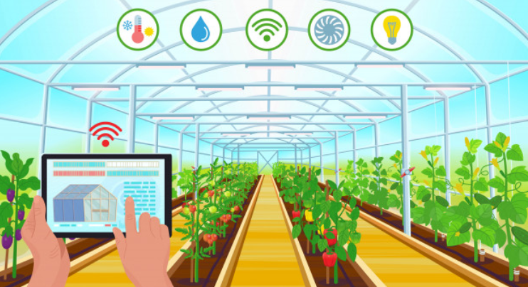
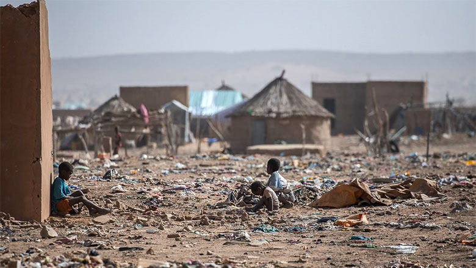
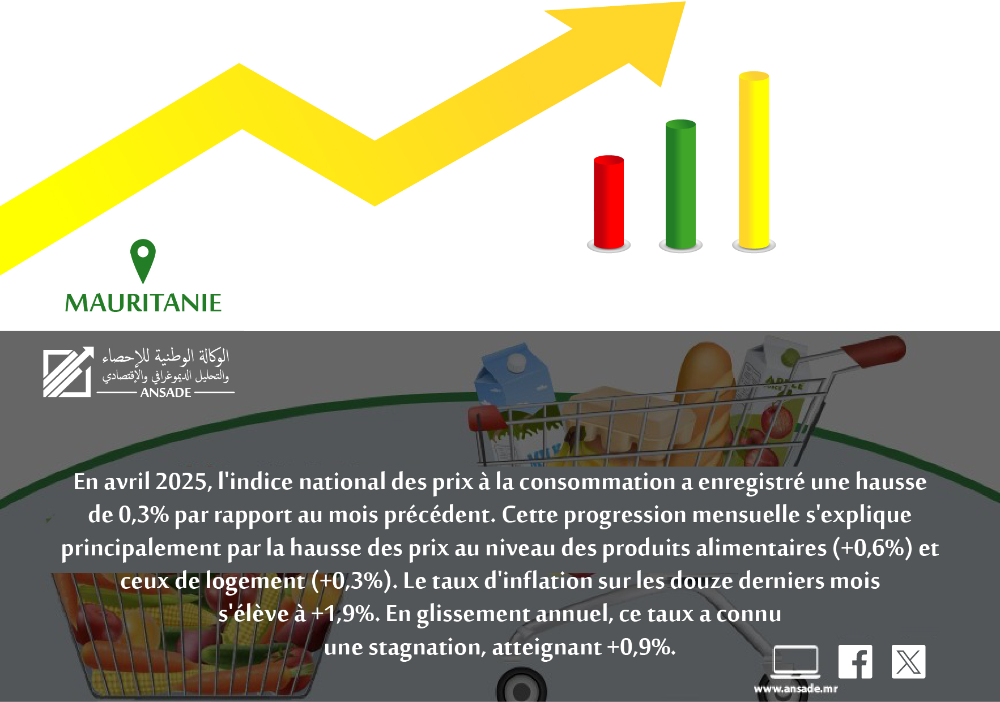

Agricultural Data Analysis System (Smart Greenhouse)
Design and development of an intelligent system for analyzing agricultural data, specifically for greenhouses.
Disaster Tweets NLP Classification
Development of a machine learning model to classify tweets related to natural disasters.

Survey Management Application
Design and implementation of a survey management application to facilitate data collection and tracking.

Survey on the Perception of Influencers
Design and implementation of a survey on the perception of influencers in Mauritanian society.
Grade Management Application
Backend development with the Flask framework and use of HTML, CSS, and JavaScript for the frontend.
Determinants of Academic Performance in Mauritania
Analysis of the factors influencing academic performance in Mauritania using R.
Bridging the Future Baseline Data Challenge
A data analysis and predictive modeling project aimed at improving primary school reading proficiency in Mauritania across regions of Tagant, Gorgol and Brakna under the USDA-funded initiative.

Poverty & Inequality Forecasting in Mauritania
Forecasts four key poverty indicators from 1996 to 2030 using survey data and interpolation techniques to support policy planning.
Modeling the Drivers of Mauritania's GDP with an ARDL Framework
Econometric modeling of Mauritania's growth dynamics using an AutoRegressive Distributed Lag (ARDL) model in R.

Data Management Platform for the NCPI (ANSADE Project)
A Django web application for managing and analyzing data related to the National Consumer Price Index (NCPI).
RAG-WebSystem – Mauritania Legal Chatbot
A Django-based web application integrating a Retrieval-Augmented Generation (RAG) pipeline with a locally hosted GGUF model and the Gemini API.